기계설계산업기사 (2002-09-08 기출문제)
1과목: 기계가공법 및 안전관리
1. b=200mm, h=150mm의 직사각형 단면을 가진 길이 2.5m의 기둥에서 세장비(細長比)의 값은?
- 45
- 58
- 65
- 78
(정답률: 34%)

2. 직경 10㎝의 단순보의 중앙에 1kN의 집중하중이 작용할 때, 최대 굽힘응력을 50MPa이내가 되도록 하려면 단순보의 길이를 몇 ㎝로 해야 하는가?
- 1963
- 2882
- 3982
- 4441
(정답률: 29%)
3. 그림과 같이 전 길이에 걸쳐 삼각형으로 분포하는 하중이 작용할 때 최대 굽힘모멘트는?
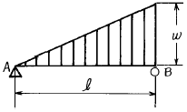
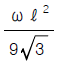
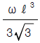
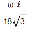
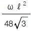
(정답률: 37%)
4. 전단력(F)과 굽힘 모멘트(M)에 관한 설명 중 맞는 것은?
- F가 일정하면 M도 일정하다.
- F가 직선적으로 변화하면 M도 직선적으로 변화한다.
- F가 직선적으로 변화하면 M은 포물선으로 변화한다.
- F가 일정하면 M은 곡선으로 변화한다.
(정답률: 57%)
5. 지름 d=20cm의 원형단면의 봉에서 회전반지름 k는 몇 cm 인가?
- 3
- 5
- 6
- 7
(정답률: 69%)
6. 그림과 같이 집중하중 P와 균일분포하중 ω가 동시에 작용할 때 최대 처짐량은? (단, ωℓ =P 이고, EI는 강성계수이다.)
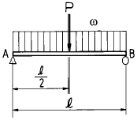
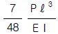
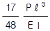
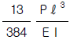
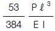
(정답률: 23%)
7. 지름 5mm인 강선을 지름 1m 의 원통에 감았을 때 강선에 생기는 최대 굽힘응력이 생기는 위치와 그 크기는? (단, 탄성계수 E= 200 GPa 이다)
- 강선의 표면, 1 GPa
- 강선의 단면도심, 0.5 GPa
- 강선의 표면, 0.5 GPa
- 강선의 단면도심, 1 GPa
(정답률: 29%)
8. 길이 ℓ인 연강봉을 길이 방향으로 압축하였더니 300mm가 되었다. 세로 변형율 0.004라고 하면 본래의 길이 ℓ은 몇 mm 인가?
- 301.20
- 303.36
- 304.40
- 3⑤.45
(정답률: 53%)
9. 세장비 314, 탄성계수 210GPa인 양단회전 기둥이 있다면 오일러 공식으로 구한 좌굴응력은 몇 MPa인가?
- 15
- 17
- 19
- 21
(정답률: 20%)
10. 단면적이 8cm2, 길이 20cm 인 둥근봉이 압축하중을 받을 때 체적변형율은? (단, 포와송비는 0.3, 이 때의 수축율(ε)은 0.00⑤이다)
- 1 x 10-4
- 2 x 10-4
- 3 x 10-4
- 4 x 10-4
(정답률: 38%)
11. 지름 6cm의 환봉이 1200Nㆍm의 비틀림 모멘트를 받을 때 이 재료에 발생하는 응력은 몇 MPa인가?
- 18.3
- 21.3
- 24.3
- 28.3
(정답률: 18%)
12. 그림과 같은 Ⅰ형 단면에서 최소 전단응력(τ min)이 발생하는 위치는?
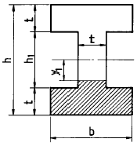
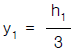
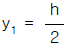
- y1 = 0
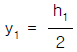
(정답률: 44%)
13. 그림과 같은 외팔보의 자유단 B에서 100N, 중간점 C에서 200N의 집중하중이 작용할 때 모멘트의 최대값은?
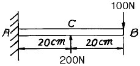
- 0
- 20 Nㆍm
- 40 Nㆍm
- 200 Nㆍm
(정답률: 29%)
14. 다음 그림과 같은 사각형 단면에서 Z-Z 축에 관한 단면 계수를 구하는 식은?
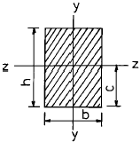
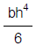
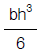
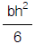
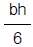
(정답률: 45%)
15. 길이 L = 3 m의 단순보가 균일 분포 하중 ω = 5 kN/m의 작용을 받고 있다. 보의 단면이 b × h = 10cm × 20cm, 탄성계수가 E = 10 GPa 일 때 이 보의 최대 처짐량은?
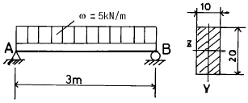
- 0.57 cm
- 0.63 cm
- 0.69 cm
- 0.79 cm
(정답률: 13%)
16. 직경이 50mm인 환봉에 75 MPa의 굽힘응력이 생기도록 하는 굽힘모멘트의 크기는 몇 N.m인가?
- 184.1
- 206.4
- 920.4
- 1230.5
(정답률: 33%)
17. 후크의 법칙에 대한 설명 중 틀린 것은?
- 응력과 단면적은 서로 반비례한다.
- 응력과 변형률은 서로 반비례한다.
- 수직응력과 탄성계수는 서로 비례한다.
- 전단응력과 전단 탄성계수는 서로 비례한다.
(정답률: 46%)
18. 폭이 15cm, 높이가 30cm인 사각형단면을 갖는 단순보에 균일분포하중 ω=10kN/m가 작용하고 있다. 보에 발생하는 최대전단응력은 몇 MPa인가? (단, 보의 길이는 6m이다.)
- 1
- 2
- 3
- 4
(정답률: 9%)
19. 지름 6mm인 강선의 상단을 고정하고, 하단을 지름 100mm 디스크의 중심에 고정하였다. 디스크의 접선방향으로 10N의 힘이 작용할 경우 강선이 6.3° 로 비틀어진다. 강선의 길이가 2m라면 강선의 전단 탄성계수는 몇 GPa인가? (단, 강선은 구조적으로 횡방향 변형은 없다고 가정한다)
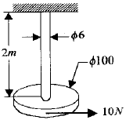
- 3.57
- 7.15
- 35.7
- 71.5
(정답률: 14%)
20. 두께 5mm, 안지름 7.5m, 높이 20m인 원통형 용기의 인장강도는 400MPa이다. 안전율을 4 로 할 경우 채울 수 있는 물의 최대 높이 h는 몇 m인가? (단, 물의 밀도는 1000 kg/m3이다.)
- 9.5
- 12.7
- 13.6
- 16.5
(정답률: 14%)
2과목: 기계제도
21. 공구에 진동을 주고 공작물과 공구사이에 연삭 입자를 두고 전기적 에너지를 기계적 에너지로 변화함으로써 공작물을 정밀하게 다듬는 방법은?(오류 신고가 접수된 문제입니다. 반드시 정답과 해설을 확인하시기 바랍니다.)
- 전해 연마
- 기어 셰이빙
- 초음파 가공
- 방전 가공
(정답률: 47%)
22. 탄소 공구강을 담금질 하기전에 필히 처리해야할 조작 중 가장 적절한 것은?
- 심냉처리
- 뜨임처리
- 구상화처리
- 풀림처리
(정답률: 40%)
23. 강을 풀림(annealing)열처리하는 목적은?
- 오스테나이트 조직까지 가열시키고 공기중에서 냉각하여 경화된 조직을 갖게하기 위하여
- 재료 표면을 굳게하며, 담금질한 강철에 인성을 증가시키기 위하여
- 가공경화된 재료를 연하게하고, 내부 응력을 제거하기 위하여
- A3변태점 이상으로 가열하고 공기중에서 방냉하여 강의 재질을 개선하기 위하여
(정답률: 18%)
24. 밀링머신 분할대로
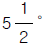
를 분할할 때, 분할크랭크의 회전수는?- 9/11
- 11/9
- 18/11
- 11/18
(정답률: 33%)
25. 강의 단조온도에 관하여 옳은 설명은?
- 고온일수록 변형저항이 감소하므로 단조가 용이하고, 결정입자의 성장을 억제할 수 있어 좋다.
- 단조가 끝나는 온도가 낮으면 결정입자는 미세해지나 내부 응력이 남아서 국부적인 취성을 가질 우려가 있다.
- 단조가 끝나는 온도가 높으면 변태점까지 냉각되는 동안 재결정이 일어나지 않으므로 좋다.
- 용융온도 이하로 가열하고 재료가 파열되지 않는 온도까지 단조가 완료되면 된다.
(정답률: 46%)
26. 사인바(sine bar)에 대한 설명 중 틀린 것은?
- α > 45° 에는 그 오차가 급격히 커지므로 45° 이하의 각도를 설정한다.
- 직각 삼각형의 삼각함수(sine)표에 의하여 높이를 각도로 환산하여 직접적으로 그 값을 구하는 방법이다.
- 윗면의 평면도, 롤러의 치수 및 진원도가 정확해야 하며 롤러 중심선이 윗면과 평행해야 한다.
- 직각자의 양끝을 지지하는 같은 크기의 원통 롤러로 구성되어 있다.
(정답률: 30%)
27. 방전 가공기의 형식이 아닌 것은?
- 콘덴서형
- 실리콘형
- 크리스탈형
- 다이오드형
(정답률: 37%)
28. 프레스 가공의 전단 작업에서 얻는 제품 전단면의 단면 형상은 다음 중 어느 영향이 가장 큰가?
- 소재의 재질
- 클리어런스(clearance)
- 프레스의 종류
- 소재의 전단 저항
(정답률: 33%)
29. 교류아크 용접기의 효율을 옳게 나타내는 식은? (단, 아크 출력의 단위는 ㎾, 소비전력의 단위는 kVA, 전원입력의 단위는 kVA 이다.)
- (아크 출력 ÷ 소비전력) × 100(%)
- (소비전력 ÷ 아크 출력) × 100(%)
- (소비전력 ÷ 전원입력) × 100(%)
- (아크 출력 ÷ 전원입력) × 100(%)
(정답률: 36%)
30. 주물의 일부분에 불순물이 집중하여 석출(析出)되든가, 가벼운 부분이 위에 뜨고 무거운 부분이 밑에 가라앉아 굳어지든가 또는 처음 생긴 결정과 후에 생긴 결정의 배합이 달라질 때가 있다. 이 현상을 무엇이라 하는가?
- 편석
- 변형
- 기공
- 수축공
(정답률: 45%)
31. 절삭온도를 측정하는 방법에 해당되지 않는 것은?
- 칩의 빛깔에 의한 방법
- 서머컬러(thermo-color)에 의한 방법
- 방사능에 의한 방법
- 칼로리미터(calorimeter)에 의한 방법
(정답률: 72%)
32. 해머의 질량을 m1, 단조물 및 앤빌 등의 타격을 받는 부분의 전체 질량을 m2 라 할 때, 단조 해머의 효율 η 의 옳은 식은?
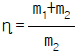
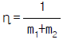
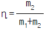
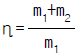
(정답률: 31%)
33. 강철은 300℃ 부근에서 단조하는 것을 피한다. 이와 관련된 것은?
- 재결정온도
- 적열인성
- 청열취성
- 회복
(정답률: 75%)
34. 소성가공에 성형완성을 정밀하게 하고 동시에 강도를 크게할 목적으로 사용되는 가공법으로 인장강도, 항복점 등은 점차 증가되고 연신율, 단면수축율 등은 반대로 감소되는 가공방법은?
- 냉간가공(cold working)
- 열간가공(hot working)
- 방전가공(discharge working)
- 절삭가공(machining)
(정답률: 43%)
35. 왁스와 같은 재료로 모형을 만들고, 여기에 주형재를 부착시켜 굳힌 후 가열하여 왁스를 녹여서 제거하고, 여기에 쇳물을 주입하여 주물을 만드는 방법으로, 주물의 치수가 정확하고, 표면이 깨끗하며, 복잡한 형상을 만드는 데 사용하는 주조법은?
- 원심 주조법
- 인베스트먼트 주조법
- 다이캐스팅
- 셀 주조법
(정답률: 36%)
36. 선반에서 절삭 속도 942 m/h로 직경 200㎜의 재료를 깎을 때 적당한 회전수는 얼마 정도인가?
- 25 rpm
- 50 rpm
- 44,977 rpm
- 89,954 rpm
(정답률: 23%)
37. 철강 용접과 비교한, 구리의 용접이 곤란한 이유를 열거한 것이다. 틀린 것은?
- 열전도율이 낮고, 냉각속도가 작다.
- 용융시 매우 심하게 산화한다.
- 수소와 같은 확산성이 큰 가스를 석출한다.
- 구리중의 산화구리 부분이 순구리에 비하여 용융점이 약간 낮아, 균열이 생긴다.
(정답률: 49%)
38. 스크레이퍼 작업에 의하여 정밀하게 다듬어진 면의 가공 정도를 말할 때, 평방당 몇 개라고 한다. 이것은 무엇에 대한 접촉면 수를 말하는 것인가?
- 1인치 평방
- 10mm평방
- 10cm 평방
- 25.4cm 평방
(정답률: 40%)
39. 비교 측정에 대한 기준이 되는 표준 게이지의 종류에 해당되지 않는 것은?
- 하이트 게이지
- 와이어 게이지
- 틈새 게이지
- 드릴 게이지
(정답률: 38%)
40. 버니어 캘리퍼스의 버니어 눈금 방법에서 어미자 19㎜를 20등분할 때 최소 읽기의 값은?
- 0.02 ㎜
- 0.03 ㎜
- 0.04 ㎜
- 0.⑤ ㎜
(정답률: 35%)
3과목: 기계설계 및 기계재료
41. 8PS, 750rpm의 원동축에서 축간거리 820㎜, 250rpm의 종동차에 전달하고자 한다. 롤러체인을 써서 체인의 평균속도를 3m/sec, 안전율을 15로 할때 양스프로킷의 잇수는 각각 얼마정도인가? (단, 피치는 19.⑤㎜로 한다.)
- Z1 = 13, Z2 = 39
- Z1 = 15, Z2 = 45
- Z1 = 20, Z2 = 60
- Z1 = 30, Z2 = 90
(정답률: 12%)
42. 복합재료 중 FRP는 무엇을 말하는가?
- 섬유 강화 목재
- 섬유 강화 플라스틱
- 섬유 강화 금속
- 섬유 강화 세라믹
(정답률: 80%)
43. 미끄럼 저어널 베어링에서 허용 압력 속도 계수를 PV = 20
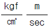
로 줄 때 저어널이 5000 ㎏f의 하중을 받고 250 rpm으로 회전한다면 저어널의 길이는?- 28.37㎝
- 32.72㎝
- 34.76㎝
- 39.35㎝
(정답률: 43%)
44. 다음 나사산의 각도중 틀린 것은?
- 미터나사 60°
- 휘트워드나사 55°
- 사다리꼴나사 35°
- 유니파이나사 60°
(정답률: 55%)
45. 탄소강에서 탄소(C) %의 증가에 따라 물리적 성질이 증가하는 것은?
- 비중
- 열팽창계수
- 열전도도
- 전기적저항
(정답률: 48%)
46. 다음 중 고속도강의 재료 표시기호는?
- STD
- STS
- SSC
- SKH
(정답률: 53%)
47. 지름이 5 cm인 봉에 800 kgf의 인장력이 작용할 때 응력(kgf/cm2)은 약 얼마인가?
- 41
- 51
- 80
- 120
(정답률: 38%)
48. Ms점 이하 Mf점 이상을 이용한 것으로 오스테나이트 조직의 온도에서 Ms점(100∼200℃)이하로 열욕 담금질하여 뜨임 마르텐사이트와 하부 베이나이트 조직을 만드는 항온 열처리 방법은?
- 담금질
- 오스템퍼
- 마템퍼
- 항온풀림
(정답률: 27%)
49. 14% 정도의 Si를 포함한 고Si주철은?
- 칠드주철
- 미하나이트주철
- 내열주철
- 내산주철
(정답률: 20%)
50. 냉간 가공이나 용접을 한 금속으로부터 강도를 크게 떨어뜨리지 않고 변형방지와 내부응력을 제거하기 위한 가장 좋은 열처리법은?
- 오스템퍼링
- 뜨임
- 노말라이징
- 응력제거풀림
(정답률: 46%)
51. 회전수가 N(rpm)인 볼베어링의 수명시간[Lh]은? (단, P는 베어링하중, C는 기본 부하용량이다.)
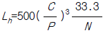
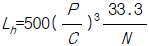
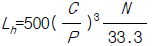
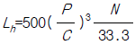
(정답률: 32%)
52. 볼 나사의 장점이 아닌 것은?
- 윤활에 그다지 주의하지 않아도 좋다.
- 먼지에 의한 마모가 적다.
- 백래시를 작게 할 수 있다.
- 피치를 그다지 작게 할 수 없다.
(정답률: 70%)
53. 원통 커플링(muff coupling)에서 원통이 축을 누르는 힘 100㎏f, 축지름 40㎜, 마찰계수 0.2일때 이 커플링이 전달할 수 있는 토크는 얼마인가?
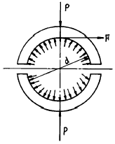
- 84.5 kgf.cm
- 96.8 kgf.cm
- 1⑤.8 kgf.cm
- 125.6 kgf.cm
(정답률: 18%)
54. 기계 재료의 조직 검사법 중 결함 검사법에 해당되지 않는 것은?
- 자력결함 검사법
- 형광 검사법
- X-선 검사법
- 인장시험 검사법
(정답률: 46%)
55. 탄소량이 변화하면 탄소강의 성질도 변화된다. 탄소량이 증가하면 어떠한 현상이 나타나는가?
- 열팽창계수가 증가한다.
- 열전도율이 증가한다.
- 전기저항이 증가한다.
- 비중이 증가한다.
(정답률: 57%)
56. 기어 이의 크기를 표시하는 방법 중 원주피치(p )를 나타내는 것이 아닌 것은? (단, z는 잇수, m 은 모듈, Dp 는 지름피치, D 는 피치원 지름이다.)
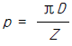
- p = π m
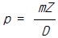
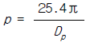
(정답률: 52%)
57. 금속의 소성가공에서 열간가공과 냉간가공의 구분은 무엇으로 하는가?
- 변태온도
- 용융온도
- 재결정온도
- 응고온도
(정답률: 71%)
58. 다음 중 다이스강(dies steel)의 특징이 아닌 것은?
- 고온경도가 낮다.
- 경도가 높아 내마모성이 좋다.
- 풀림처리 상태에서 가공성이 양호하다.
- 담금질에 의한 변형이 적다.
(정답률: 54%)
59. 코터이음의 자립을 위한 조건은 마찰각을 임, 구배를 읓라 할 때 어느 것이 알맞는가?
- 양쪽구배 읓 ≤ 임
- 한쪽구배 읓 ≤ 임
- 복원중(정확한 보기 내용을 아시는분께서는 오류 신고를 통하여 내용 작성부탁 드립니다.)
- 한쪽구배 읓 ≥ 2임
(정답률: 33%)
60. 수압이 28㎏f/㎝2이고, 허용인장강도가 5㎏f/㎜2이며, 효율이 70%인 상온에서 사용하는 이음매 없는 강관의 바깥 지름 Do는 얼마 정도인가? (단, 부식을 고려한 상수 C의 값은 1㎜, 강관의 안지름은 580㎜이다.)
- Do = 581.8㎜
- Do = 628.4㎜
- Do = 604.2㎜
- Do = 891.7㎜
(정답률: 27%)
4과목: 컴퓨터응용설계
61. 렌더링의 한 기법인 음영법(shading)에서의 난반사(diffuse reflection)에 대한 설명 중 적당하지 않은 것은?
- 난반사에 의하면 빛이 표면에 흡수되었다가 모든 방향으로 다시 흩어진다.
- 난반사의 입사각이란 반사면의 법선벡터와 입사광 방향벡터의 사잇각을 의미한다.
- 난반사는 물체의 표면상태의 묘사에 이용된다.
- 난반사는 물체표면이 거울면과 같이 매끈한 면의 반사형태를 표현할 때 가장 적합하다.
(정답률: 25%)
62. 널리 사용되는 원추 단면 곡선에는 원, 타원, 포물선 및 쌍곡선등이 있다. 포물선을 음함수 형태로 표시한 식은?
- x2+y2-r2=0
- y2-4ax=0
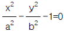
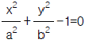
(정답률: 26%)
63. 평면상의 한점 L = (2, 2)를 원점을 중심으로 30° 만큼 반시계 방향으로 회전시킬 때 변환된 좌표값은?
- (2.866 2.5)
- (1.732 1)
- (0.732 2.732)
- (0.433 0.25)
(정답률: 40%)
64. 표면거칠기 기호의 기입을 그림과 같이 하였을 때 a 부분에 들어가야 하는 것 중 적당한 것은?
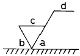
- X
- F
- G
- S
(정답률: 63%)
65. 다음 그림은 구름베어링의 형식기호이다. 무슨 베어링을 나타내는가?
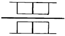
- 니들 롤러 베어링
- 원뿔 롤러 베어링
- 원통 롤러 베어링
- 드러스트 롤러 베어링
(정답률: 32%)
66. 투상법상 도형에 나타나지 않으나 편의상 필요한 모양을 표시하는데 쓰이는 선은?
- 숨은선
- 가상선
- 수준면선
- 특수 지정선
(정답률: 58%)
67. 컴퓨터의 운영체제(O.S) 기능 중 분산처리 시스템에 대한 특징을 설명한 것으로 잘못된 것은?
- 자료 처리 속도가 빠르다.
- 시스템의 신뢰성이 낮다.
- 새로운 기능을 부여하기가 용이하다.
- 부하의 자동 분산이 용이하다.
(정답률: 63%)
68. x = rcos 읨, y = rsin 읨가 그리는 궤적의 모양은?
- 원
- 타원
- 쌍곡선
- 포물선
(정답률: 32%)
69. 다음 투상의 우측면도에 해당하는 것은?
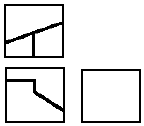
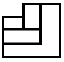
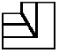
(정답률: 31%)
70. 가상선으로 사용하는 선은?
- 가는 2점쇄선
- 가는 실선
- 숨은선
- 가는 1점쇄선
(정답률: 55%)
71. 도형변환에 있어서 도형회전(Rotation)의 수식이 맞는 것은?
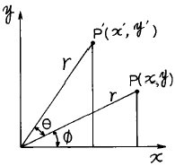
- 복원중(정확한 보기 내용을 아시는분께서는 오류 신고를 통하여 내용 작성부탁 드립니다.)
- 복원중(정확한 보기 내용을 아시는분께서는 오류 신고를 통하여 내용 작성부탁 드립니다.)
- 복원중(정확한 보기 내용을 아시는분께서는 오류 신고를 통하여 내용 작성부탁 드립니다.)
- 복원중(정확한 보기 내용을 아시는분께서는 오류 신고를 통하여 내용 작성부탁 드립니다.)
(정답률: 24%)
72. 그림은 어떤 형체를 정면도와 우측면도를 표현한 것이다. 평면도의 투상으로 옳지 않는 것은?
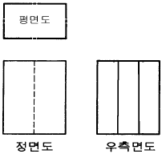
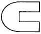
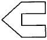
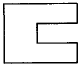
(정답률: 50%)
73. 기계제도에서 사용되는 선중에서 선의 종류가 다른 것은?
- 지시선
- 회전 단면선
- 치수 보조선
- 피치선
(정답률: 48%)
74. 다음 중 곡률이 일정한 곡선들만의 쌍으로 묶은 것은?
- 포물선, 타원
- 원, 포물선
- 직선, 원
- 원, 타원
(정답률: 29%)
75. 철강 재료 기호의 첫째자리 부분이 나타내는 것은?
- 제품의 형상
- 재질
- 경도
- 인장강도
(정답률: 64%)
76. 그래픽 터미널의 한 화면을 꾸미기 위해 소요되는 메모리들을 일명 무엇이라고 하는가?
- Random access memory
- Bit plane
- Basic memory
- Memory address
(정답률: 40%)
77. 다음의 점들 중에서 점(100, 100)과 점(200, 150)을 지나는 직선 위에 있는 것은 어느 것인가?
- 점 (150, 120)
- 점 (250, 170)
- 점 (0, 50)
- 점 (300, 0)
(정답률: 32%)
78. 코일 스프링(coil spring)을 그릴 때의 설명으로 맞는 것은?
- 원칙적으로 하중이 걸린 상태에서 그린다.
- 특별한 단서가 없는 한 모두 왼쪽 감기로 그린다.
- 중간부분을 생략할 때에는 생략한 부분을 가는 실선으로 그린다.
- 스프링의 종류 및 모양만을 도시하는 경우에는 중심선을 굵은 실선으로 그린다.
(정답률: 38%)
79. 선의 대한 설명 중 틀린 것은?
- 지시선은 가는실선으로 기술, 기호 등을 표시하기 위하여 끌어내는데 쓰인다.
- 수준면선은 수면, 유면의 위치를 표시하는데 쓰인다.
- 기준선은 특히 위치결정의 근거가 된다는 것을 명시할 때 쓰인다.
- 아주 굵은실선은 특수한 가공을 하는 부분에 쓰인다.
(정답률: 43%)
80. 다음 중 평판 디스플레이 장치 중 해상도가 가장 떨어져 주로 대형화면으로 사용되는 기술적인 한계를 갖는 장치는?
- 플라즈마 판(Plasma panel)
- 전자 발광 디스플레이(Electroluminescent display)
- 액정 디스플레이(Liquid crystal display: LCD)
- 박판 필름 트랜지스터(Thin-Film Transistor: TFT)
(정답률: 31%)
h = 2.5m = 2500mm
b = 200mm
세장비(細長比) = h/b = 2500/200 = 12.5
따라서 보기에서 정답이 "58"인 이유는 오답입니다.